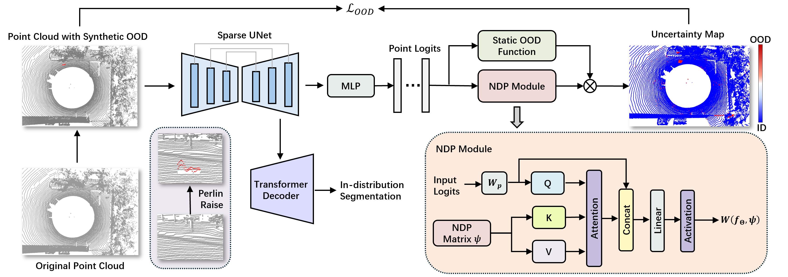
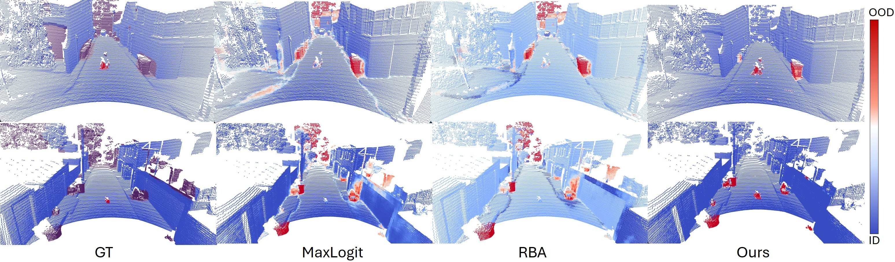

Neural Distribution Prior for LiDAR Out-of-Distribution Detection
The University of Melbourne, Parkville, Victoria 3010, Australia
Paper demo CVPR • 2026
What we propose
- We introduce the Neural Distribution Prior (NDP), a learnable prior estimation module that models the distributional structure of network predictions and adaptively adjusts OOD scores to improve calibration under class imbalance. Combined with the Extended Energy score proposed in this work, our method achieves 61.31% AP on the STU test set, which is over 10× higher than the previous state-of-the-art result.
- We develop a Perlin noise–based OOD synthesis method that generates diverse synthetic OOD samples directly from inlier scans, providing additional negative supervision without external datasets.
- We propose a Soft Outlier Exposure (SOE) training strategy that jointly leverages synthetic OOD samples and unreliable void regions by assigning soft OOD labels, enabling stable optimization and better generalization.
Framework

Video demonstration
Results

Quantitative results
Anomaly segmentation performance on the test set of the STU benchmark. All methods use the Mask4Former architecture. NDP consistently achieves state-of-the-art performance under both point-level and object-level evaluations.
| Method | Auxiliary OOD Data |
Point-Level OOD | Object-Level OOD | ||||||
|---|---|---|---|---|---|---|---|---|---|
| AUROC ↑ | FPR@95 ↓ | AP ↑ | RecallQ ↑ | SQ ↑ | RQ ↑ | UQ ↑ | PQ ↑ | ||
| Deep Ensemble | ✗ | 86.74 | 58.05 | 5.17 | 16.75 | 84.49 | 10.43 | 14.16 | 8.81 |
| MC Dropout | ✗ | 61.51 | 82.37 | 0.11 | 2.25 | 86.72 | 1.95 | 2.14 | 1.86 |
| MaxLogit | ✗ | 84.53 | 81.49 | 0.95 | 26.14 | 83.06 | 2.13 | 21.71 | 1.77 |
| Void Classifier | ✓ | 85.99 | 78.60 | 3.92 | 17.64 | 84.40 | 8.19 | 14.89 | 6.91 |
| RbA | ✗ | 66.38 | 100.0 | 0.81 | 24.04 | 83.28 | 3.23 | 20.02 | 2.69 |
| NDP-Entropy | ✓ | 98.41 | 9.83 | 29.53 | 16.33 | 74.40 | 15.09 | 12.15 | 11.22 |
| NDP-Energy | ✓ | 99.21 | 3.65 | 53.75 | 20.31 | 78.21 | 26.94 | 15.88 | 21.07 |
| NDP-EE | ✓ | 99.26 | 3.30 | 61.31 | 25.58 | 79.93 | 31.26 | 20.44 | 24.99 |
Citation
To appear at CVPR 2026.
If copy doesn’t work (some browsers block clipboard without HTTPS), manually select the text.